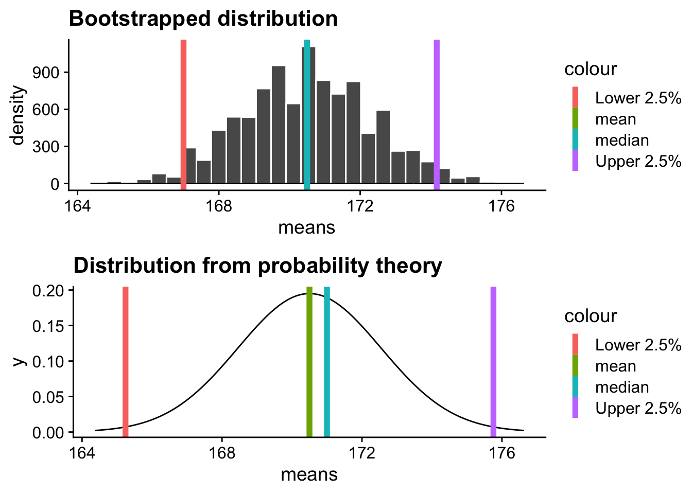
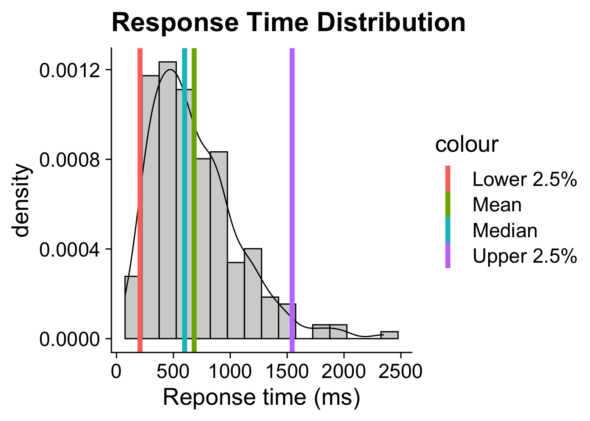
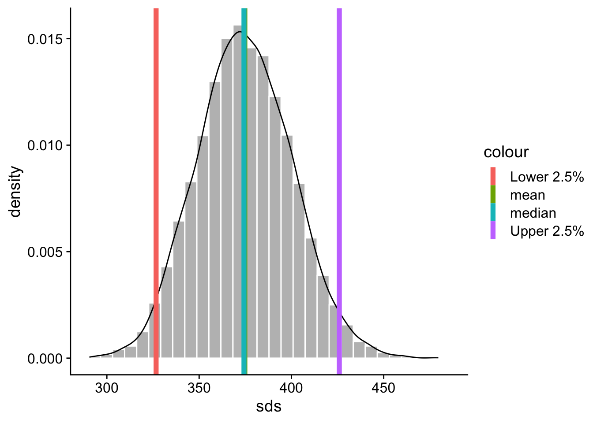
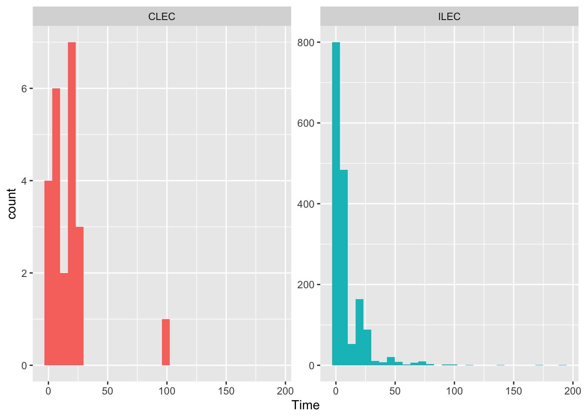
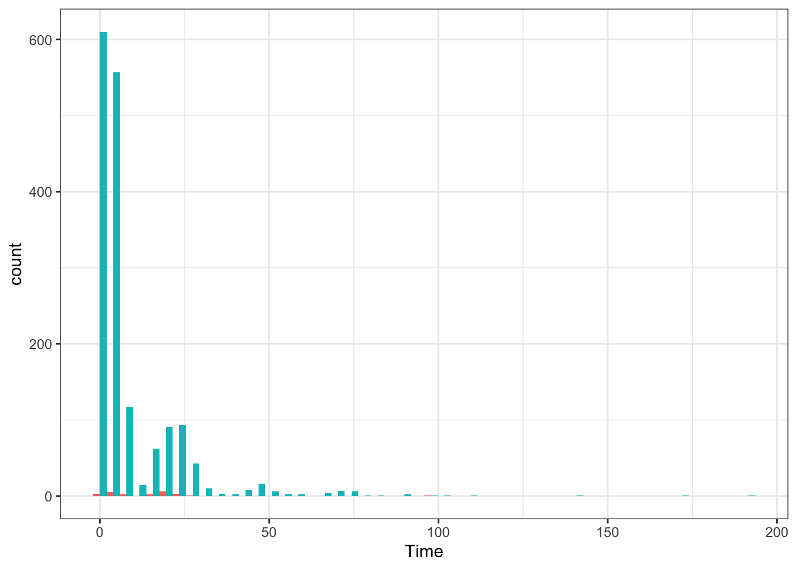
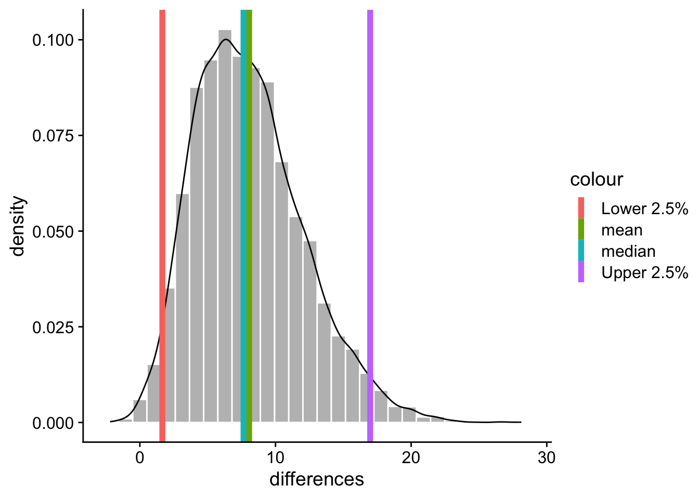
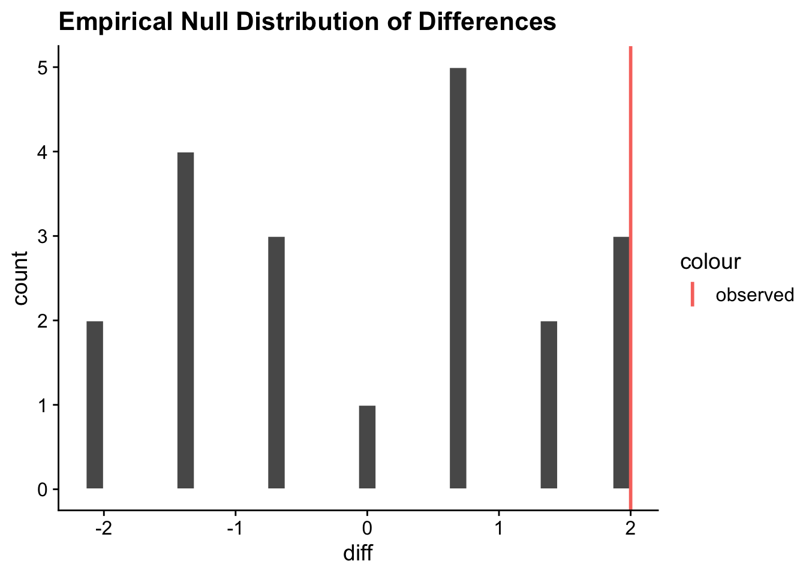
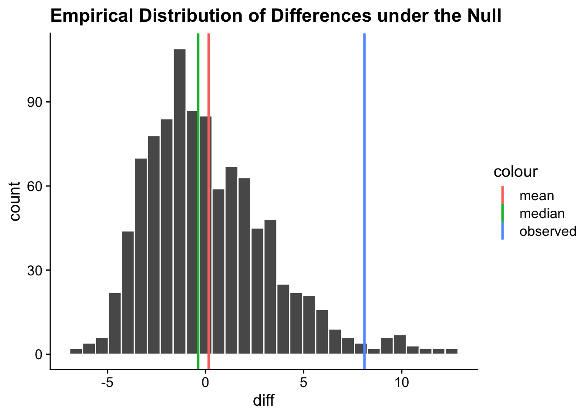

Start looking at topics related to machine learning
We are going to start off with Resampling methods
First. Sampling
It is impossible to survey every person in the population we are interested in, so we often take a “random sample” from the population and calculate a sample statistic (e.g., mean, median).
A lot of our statistics follow well-defined distributions (e.g., normal distribution), and we use the properties of these distributions to estimate the population parameter.
Problems with Sampling
Single Estimate of the Population Parameter
Estimate the population mean
Sampling distribution of mean derived from sample statistics
Built a 95% confidence interval around the sample mean
We’ve been relying on a single estimate of the population parameter (except for with Bayesian methods).
We make assumptions about the sample (e.g., representative sample, large sample size, normality), which may or may not be true.
Introduction to Resampling
A statistical technique that involves re-estimation of the population parameter by repeatedly drawing samples from the original sample
Reasons for Resampling
Reduce bias of the estimate by using multiple samples instead of one
Better sense of precision of the estimated population parameter
We do not need to make assumptions about the population distribution (e.g., when we perform two samples t-test, for example, we make the assumption that the populations from which the samples are drawn are normally distributed)
Sample does not have to be large
Types of Resampling
Bootstrapping
Jackknife method (just a glimpse)
Permutation testing (just a glimpse)
pull yourself up by your bootstraps
Improve yourself/overcome (often impossible) obstacles without aid or assistance from anyone else. Use your own resources to improve your standing.
Bootstrapping
Bootstrapping is a method where we rely entirely on the sample that we have at hand.
We randomly sample within the sample (with replacement)
Compute the estimator of interest in order to…
Build an empirical distribution of that test statistic.
Illustration of Bootstrapping
Imagine we are trying to estimate the height of a cohort of friends. But you only have 6. Specifically, these 6 friends.
To estimate their height, you decide to perform bootstrapping, meaning you draw many samples from this group of 6 people, with replacement, each time calculating the average height of the sample.
[1] "Mean height of this sample: 171.833333333333"
Bootstrap 10,000 Times
Code
# When resampling, it is generally a good practice to set random seed# for full reproducibility of the resampling processset.seed(5067)boot <-10000# Set number of bootstrap samplesfriends =c('Monica', 'Rachel', 'Ross', 'Joey', 'Phoebe', 'Chandler')heights <-c(165, 165, 178, 170, 172, 173)sample_means <-NULL# Initialize list to store sample means
Bootstrap 10,000 Times
Code
# When resampling, it is generally a good practice to set random seed# for full reproducibility of the resampling processset.seed(5067)boot <-10000# Set number of bootstrap samplesfriends =c('Monica', 'Rachel', 'Ross', 'Joey', 'Phoebe', 'Chandler')heights <-c(165, 165, 178, 170, 172, 173)sample_means <-NULL# Initialize list to store sample means# Append the mean of bootstrap sample heights to *sample_means*for(i in1:boot){ #<< this_sample <-sample(heights, size =length(heights), replace = T) #<< sample_means <-c(sample_means, mean(this_sample)) #<<} #<<
Comparison
Code
library(ggpubr)
Loading required package: ggplot2
Code
mu =mean(heights)sem =sd(heights)/sqrt(length(heights))cv_t =qt(p = .975, df =length(heights)-1)bootstrapped =data.frame(means = sample_means) %>%ggplot(aes(x = means)) +geom_histogram(color ="white") +geom_density() +geom_vline(aes(xintercept =mean(sample_means), color ="mean"), linewidth =2) +geom_vline(aes(xintercept =median(sample_means), color ="median"),linewidth =2) +geom_vline(aes(xintercept =quantile(sample_means, probs = .025), color ="Lower 2.5%"), linewidth =2) +geom_vline(aes(xintercept =quantile(sample_means, probs = .975), color ="Upper 2.5%"), linewidth =2) +scale_x_continuous(limits =c(mu-3*sem, mu+3*sem))+ggtitle("Bootstrapped distribution") + cowplot::theme_cowplot()from_prob =data.frame(means =seq(from =min(sample_means), to =max(sample_means))) %>%ggplot(aes(x = means)) +stat_function(fun =function(x) dnorm(x, m = mu, sd = sem)) +geom_vline(aes(xintercept =mean(heights), color ="mean"), linewidth =2) +geom_vline(aes(xintercept =median(heights), color ="median"), linewidth =2) +geom_vline(aes(xintercept = mu-cv_t*sem, color ="Lower 2.5%"), linewidth =2) +geom_vline(aes(xintercept = mu+cv_t*sem, color ="Upper 2.5%"), linewidth =2) +scale_x_continuous(limits =c(mu-3*sem, mu+3*sem))+ggtitle("Distribution from probability theory") + cowplot::theme_cowplot()ggarrange(bootstrapped, from_prob, ncol =1)
`stat_bin()` using `bins = 30`. Pick better value with `binwidth`.
Warning: Removed 3 rows containing non-finite outside the scale range
(`stat_bin()`).
Warning: Removed 3 rows containing non-finite outside the scale range
(`stat_density()`).
Warning: Removed 2 rows containing missing values or values outside the scale range
(`geom_bar()`).

There are several candidates for central tendency (e.g., mean, median) and for variability (e.g., standard deviation, interquartile range). Some of these do not have well understood theoretical sampling distributions.
For the mean and standard deviation, we have theoretical sampling distributions to help us, provided we think the mean and standard deviation are the best indices. For the others, we can use bootstrapping.
Example 2
Central tendency and variability of 216 reaction times
Code
# Set random seed before generating dataset.seed(5067)# The observations generally follow the F Distribution + random noiseresponse =rf(n =216, 3, 50) response = response *500+rnorm(n =216, mean =200, sd =100)
Visualize Data
Code
library(tidyverse)
── Attaching core tidyverse packages ──────────────────────── tidyverse 2.0.0 ──
✔ dplyr 1.1.4 ✔ readr 2.1.5
✔ forcats 1.0.0 ✔ stringr 1.5.1
✔ lubridate 1.9.4 ✔ tibble 3.2.1
✔ purrr 1.0.2 ✔ tidyr 1.3.1
── Conflicts ────────────────────────────────────────── tidyverse_conflicts() ──
✖ dplyr::filter() masks stats::filter()
✖ dplyr::lag() masks stats::lag()
ℹ Use the conflicted package (<http://conflicted.r-lib.org/>) to force all conflicts to become errors
Code
set.seed(1048596)response =rf(n =216, 3, 50) response = response *500+rnorm(n =216, mean =200, sd =100)values =quantile(response, probs =c(.025, .5, .975))mean_res =mean(response)data.frame(x = response) %>%ggplot(aes(x)) +geom_histogram(aes(y = ..density..), binwidth =150, fill ="lightgrey",color ="black")+geom_density()+geom_vline(aes(xintercept = values[1], color ="Lower 2.5%"), linewidth =2)+geom_vline(aes(xintercept = values[2], color ="Median"), linewidth =2)+geom_vline(aes(xintercept = values[3], color ="Upper 2.5%"),linewidth =2)+geom_vline(aes(xintercept = mean_res, color ="Mean"), linewidth =2)+labs(x ="Reponse time (ms)", title ="Response Time Distribution") + cowplot::theme_cowplot(font_size =20)
Warning: The dot-dot notation (`..density..`) was deprecated in ggplot2 3.4.0.
ℹ Please use `after_stat(density)` instead.

Code
set.seed(5067) # Set random seedboot <-10000# Set number of bootstrap samplesresponse_means <-NULL# Initialize list of mean valuesfor(i in1:boot){ sample_response <-sample(response, size =216, replace = T) response_means <-c(response_means, mean(sample_response))}
data.frame(sds = response_sd) %>%ggplot(aes(x = sds)) +geom_histogram(aes(y = ..density..),color ="white", fill ="grey") +geom_density() +geom_vline(aes(xintercept =mean(response_sd), color ="mean"), linewidth =2) +geom_vline(aes(xintercept =median(response_sd), color ="median"), linewidth =2) +geom_vline(aes(xintercept =quantile(response_sd, probs = .025), color ="Lower 2.5%"), linewidth =2) +geom_vline(aes(xintercept =quantile(response_sd, probs = .975), color ="Upper 2.5%"), linewidth =2) + cowplot::theme_cowplot()
`stat_bin()` using `bins = 30`. Pick better value with `binwidth`.

Code
mean(response_sd)
[1] 374.7614
Code
median(response_sd)
[1] 374.299
Code
quantile(response_sd, probs =c(.025, .975))
2.5% 97.5%
326.6762 425.9399
Other Estimators?
You can bootstrap estimates and 95% confidence intervals for any statistics you’ll need to estimate.
Things you should learn how to do in R:
learn to read a for loop.
learn to write your own function.
The boot package and function provides some help to speed this process along. Things you should learn how to do in R:
library(boot)# function to obtain R-Squared from the datarsq <-function(data, indices) { d <- data[indices,] # allows boot to select sample fit <-lm(mpg ~ wt + disp, data = d) # this is the code you would have runreturn(summary(fit)$r.square)}results <-boot(data = mtcars, statistic = rsq, R =10000)
BOOTSTRAP CONFIDENCE INTERVAL CALCULATIONS
Based on 10000 bootstrap replicates
CALL :
boot.ci(boot.out = results, type = "perc")
Intervals :
Level Percentile
95% ( 0.6862, 0.8771 )
Calculations and Intervals on Original Scale
Another Example
In this district, Verizon provides line service to both Verizon and non-Verizon customers. Here, we are going to look at a dataset containing service waiting times for Verizon customers (ILEC) and non-Verizon customers (CLEC). We are interested in whether waiting time of non-Verizon customers is longer than that of Verizon customers.
Verizon %>%ggplot(aes(x = Time, fill = Group)) +geom_histogram(bins =30) +guides(fill ="none") +facet_wrap(~Group, scales ="free_y")

Left is the distribution of waiting times of Non-Verizon (CLEC) customers and right is the distribution of waiting times of Verizon (ILEC) customers
Inspect Verizon Data 2
Code
Verizon %>%ggplot(aes(x = Time, fill = Group)) +geom_histogram(bins =50, position ="dodge") +guides(fill ="none") +theme_bw()

Code
table(Verizon$Group)
CLEC ILEC
23 1664
Analysis Plan and Justification
It seems that the data do not meet the typical assumptions of an independent samples \(t\)-test.
In this case, to estimate mean differences we can use bootstrapping.
Here, we’ll resample with replacement separately from the two samples and calculate their difference in means.
Code
# Set random seed and number of bootstrap samplesset.seed(5067)boot <-10000response_means <-NULLfor(i in1:boot){ sample_response <-sample(response, size =216, replace = T) response_means <-c(response_means,mean(sample_response))}
Inside the For Loop
Sample (with replacement) Verizon group (ILEC) customers
Sample (with replacement) non-Verizon group (CLEC) customers
Calculate the difference in means between the two groups
set.seed(5067)boot <-10000difference <-NULLsubsample_CLEC = Verizon %>%filter(Group =="CLEC")subsample_ILEC = Verizon %>%filter(Group =="ILEC")for(i in1:boot){# Sample (with replacement) Verizon group (ILEC) customers sample_CLEC =sample(subsample_CLEC$Time, size =nrow(subsample_CLEC), replace = T)# Sample (with replacement) Non-Verizon group (CLEC) customers sample_ILEC =sample(subsample_ILEC$Time, size =nrow(subsample_ILEC), replace = T)# Calculate the difference in means between the two groups# Append the difference value to a list difference <-c(difference, mean(sample_CLEC) -mean(sample_ILEC)) #<<}
Bootstrap Distribution of Differences
Code
data.frame(differences = difference) %>%ggplot(aes(x = differences)) +geom_histogram(aes(y = ..density..),color ="white", fill ="grey") +geom_density() +geom_vline(aes(xintercept =mean(differences), color ="mean"), linewidth =2) +geom_vline(aes(xintercept =median(differences), color ="median"),linewidth =2) +geom_vline(aes(xintercept =quantile(differences, probs = .025), color ="Lower 2.5%"), linewidth =2) +geom_vline(aes(xintercept =quantile(differences, probs = .975), color ="Upper 2.5%"), linewidth =2) + cowplot::theme_cowplot()
`stat_bin()` using `bins = 30`. Pick better value with `binwidth`.

The difference in means is 7.64 \([1.66,16.98]\). What would this mean?
Bootstrapping is useful when:
Violated assumptions of the test (e.g., normality)
You have good reason to believe the sampling distribution is not normal, but don’t know what it is (e.g., median)
Oddities in your data, like very unbalanced samples
This allows you to create a confidence interval around any statistic you want. You can test whether these statistics are significantly different from any other value.
Bootstrapping will NOT help you deal with:
Dependence between observations – for this, you’ll need to explicitly model dependence
Improperly specified models or forms – use theory to guide you here
Measurement error – why bother?
Caveats: representativeness of the sample, outliers
Jackknife Resampling
Jackknife Resampling is a method where researchers generate n sub-samples, each leaving out one observation. The method is very similar to bootstrapping except the way that we create the sub-samples.
Friends Example. If you decide to jackknife their heights, you would draw six sub-samples and calculate their respective mean height.
Can assess the accuracy of a statistical estimator without making assumptions about the underlying distribution
Computationally efficient bc only n sub-samples are generated (compared to 10,000 for example)
Not used as much these days
Sensitive to sample size: If sample size is small, it can result in inaccurate estimates of the bias (e.g., sample size of 6 means six jackknife samples).
Permutation Testing
A resampling method that involves randomly shuffling the labels (e.g., conditions) across the data and recomputing the test statistic of interest, thereby deriving a null distribution of the test statistic.
Permutation Example: Restaurants
We are interested in the difference in the rating of group A and group B restaurants.
Repeat the previous step numerous times to impose a null distribution of mean differences
observed_diff <- perm_df %>%filter(group =='A') %>%pull(rating) %>%mean() - perm_df %>%filter(group =='B') %>%pull(rating) %>%mean()set.seed(5067) # Set random seedperm =20# Set number of permutationsdifferences <-NULLfor (i inc(1:perm)){ random_indices <-sample.int(nrow(perm_df), 3) random_A <- perm_df[random_indices,] random_B <- perm_df[-random_indices,] differences <-c(random_A %>%pull(rating) %>%mean() - random_B %>%pull(rating) %>%mean(), differences)}
Code
diff_df =data.frame(diff = differences)ggplot(diff_df, aes(x = diff)) +geom_histogram(color ="white") +geom_vline(aes(xintercept = observed_diff, color ="observed"), linewidth =1) +ggtitle("Empirical Null Distribution of Differences") + cowplot::theme_cowplot()
`stat_bin()` using `bins = 30`. Pick better value with `binwidth`.

Count the number of permutations that have larger test statistic value than the observed difference, equivalent to the \(p\)-value (or the probability that a test statistic is greater than or equal to the observed value, under the null).
Let’s Try
Initially, we had 23 CLEC and 1,664 ILEC customers. First, we are going to calculate the mean difference in waiting time between the two groups using the observed data.
We are going to randomly shuffle the labels of groups (previous CLEC and ILEC labels don’t matter!). Label 23 random customers as CLEC and 1,664 random customers as ILEC 1,000 times, and store the mean difference in waiting time between the two groups inside a list.
Determine the number of (random) mean differences greater than the observed difference in means (8.10).
One Way to do this
subsample_CLEC = Verizon %>%filter(Group =="CLEC")subsample_ILEC = Verizon %>%filter(Group =="ILEC")observed_diff <-mean(subsample_CLEC$Time) -mean(subsample_ILEC$Time)set.seed(1048596) # Set random seedperm =1000# Set number of permutationsdifferences <-NULL#<<
One Way to do this
subsample_CLEC = Verizon %>%filter(Group =="CLEC")subsample_ILEC = Verizon %>%filter(Group =="ILEC")observed_diff <-mean(subsample_CLEC$Time) -mean(subsample_ILEC$Time)set.seed(1048596) # Set random seedperm =1000# Set number of permutationsdifferences <-NULLfor (i in1:perm){ random_indices <-sample.int(nrow(Verizon), 23) random_CLEC <- Verizon[random_indices,] random_ILEC <- Verizon[-random_indices,] differences <-c(differences, #<<mean(random_CLEC$Time) -mean(random_ILEC$Time)) #<<}
subsample_CLEC = Verizon %>%filter(Group =="CLEC")subsample_ILEC = Verizon %>%filter(Group =="ILEC")observed_diff <-mean(subsample_CLEC$Time) -mean(subsample_ILEC$Time)set.seed(1048596) # Set random seedperm =1000# Set number of permutationsdifferences <-NULLfor (i in1:perm){ random_indices <-sample.int(nrow(Verizon), 23) random_CLEC <- Verizon[random_indices,] random_ILEC <- Verizon[-random_indices,] differences <-c(differences, mean(random_CLEC$Time) -mean(random_ILEC$Time))}paste("Number of mean differences greater than observed difference: ", sum(differences > observed_diff)) #<<
[1] "Number of mean differences greater than observed difference: 24"
perm_df =data.frame(diff = differences)ggplot(perm_df, aes(x = diff)) +geom_histogram(color ="white") +geom_vline(aes(xintercept =mean(diff), color ="mean"), linewidth =1) +geom_vline(aes(xintercept =median(diff), color ="median"), linewidth =1) +geom_vline(aes(xintercept = observed_diff, color ="observed"), linewidth =1) +ggtitle("Empirical Distribution of Differences under the Null") + cowplot::theme_cowplot()
`stat_bin()` using `bins = 30`. Pick better value with `binwidth`.

Permutation Testing Summary
Permutation testing is useful for hypothesis testing because we can easily derive a \(p\)-value
Can be used when data violates common assumptions about the data (i.e., homogeneity of variance and normality)
Assumption that the observations need to be exchangeable. Some observations may not be exchangeable (e.g., time series data - data collected at different time points)
Sample size needs to be large. No point randomly shuffling 1,000 times when the possible permutation is less than 1000.